Members of the Chicago theater world are anxiously awaiting the 17th of October; that’s tomorrow if you’re reading this on Sunday October 16th. Should the rest of us pay attention as well? Absolutely! Monday October 17 is the first live Jeff Awards for Equity plays and musicals since 2019, delayed thanks to Covid. “This represents a return to normalcy. It’s healthy for the theater community to be together again…it’s been so long,” said Chris Jones, theater critic for the Chicago Tribune. “The Jeffs have always been an important, independent stamp of approval working in tandem with the critics…and now back to life.”
You’re perhaps unfamiliar with the Jeff Awards? The Jeffs are Chicago’s salute to excellence in Chicago theater, and Chicago is overflowing with terrific theater! You may have heard of the Tony Awards for theatrical achievement in New York. But I would put many Chicago plays up against Broadway’s best. And so would other members of the Jeff Committee, the group that judges and presents the Jeff Awards, chosen in a secret ballot.
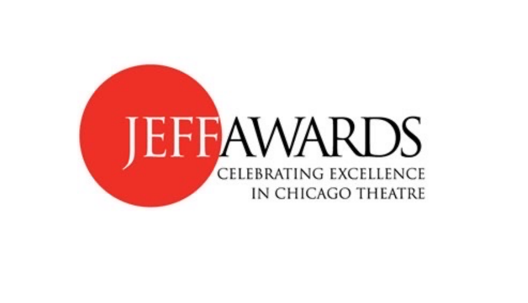
A little background: back in 1968, a group of members of the Actor’s Equity Midwest Advisory Committee wanted to honor Chicago actors. Within the year, a name was chosen, and the first awards announced, known from the beginning as the Jeffs. But who was Jeff? Joseph Jefferson III was one of the best-known American comedians in the 19th century. Son of a scenic designer and actress, Jefferson at age nine moved with his family to Chicago where he performed in our city’s first resident company, the Chicago Theater. His family continually toured the United States and England, even Australia and Tasmania. Gaining international fame, he developed the character of Rip Van Winkle in 1865, a role that he played for the rest of his life, on stage and in silent films, appearing in Chicago every year from 1880 to 1904. He died the following year.
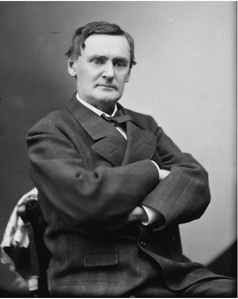 Joseph Jefferson |
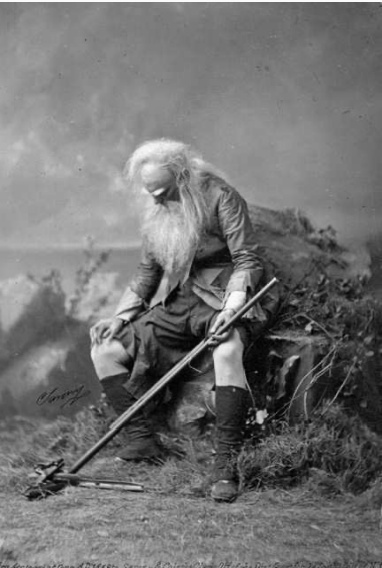 Joseph Jefferson as Rip Van Winkle |
No doubt Joe, as he was known, would have been delighted to have an awards show named in his honor. The Committee’s mission is to celebrates excellence in theater but does not purport to name “the best.” It aims to encourage theater attendance, educate about theater, and recognize quality productions. The October 17th awards honor Equity theaters working under the Actors Equity Association contract (the actor’s union), generally Chicago’s larger theaters (Non-Equity Awards will be given in the spring).
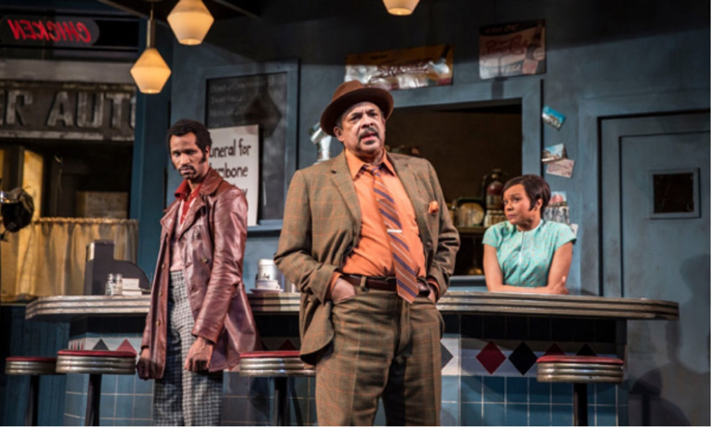
So, who are the Jeff Committee members who determine what is excellent? The Committee consists of 55 individuals with a passion for theater. Chosen by the Jeff membership committee from interested candidates, members have a wide range of theatrical experience, from acting, directing, and teaching to lighting, set design, costumes, and even enthusiastic attendance. This breadth of backgrounds ensures a broad perspective on what excellence looks like.
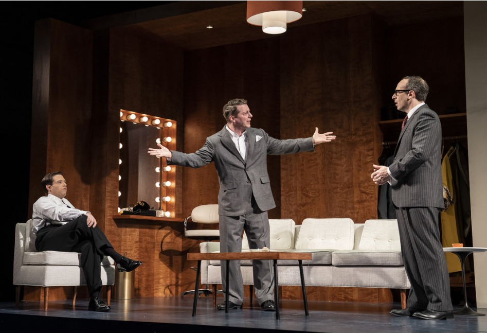
John Knight, a member since 2019, has been involved in theater since he was in the 5th grade and wearing his mother’s frilly blouse as part of his costume, played John Adams. He’s been an actor, drama teacher, director, and stage technician before he retired. “I thought joining this committee would be a great way for me to give back to the community that has given me so much” he said.
Today a management consultant in the health care industry, Suzanne Ross promoted theater and the arts early in her career. Chairing communications for the Jeffs, she knows the Committee’s award process can appear mysterious. “I want to keep the community informed about our organization and provide greater transparency on our awards program.”
The Jeff Awards Committee itself provides thoughtful guidelines for how to think about excellence. For each production, for example, members are asked to consider:
Was the production as a whole fresh, vital and memorable?
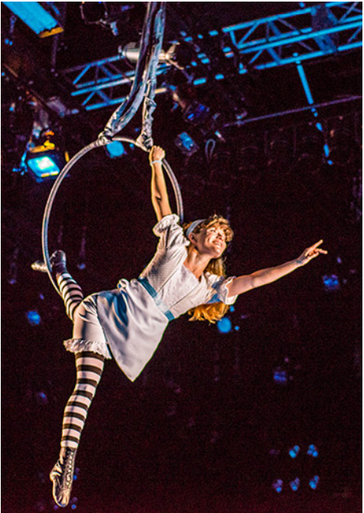
Did the production engage the audience and have an impact that was compatible with the theme, style, and apparent concept of the director?
If a play is not a new play, one does not evaluate the script. It’s important to separate the production as a whole or an individual element of the play, like an actor or the lighting, from the script, especially if you don’t personally care for the script:
If all the elements of a production come together to form an excellent whole, a vote for production should be cast, even though one may dislike the play itself.
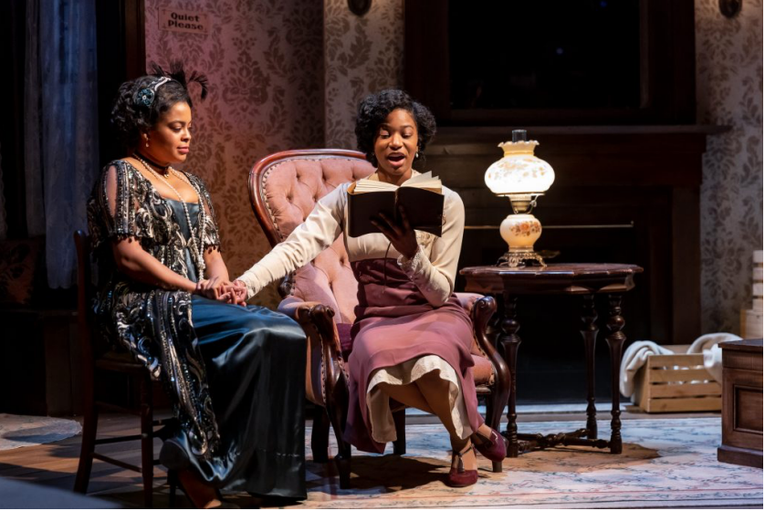
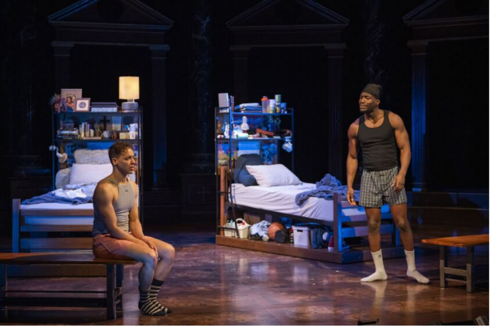
Jeff members can choose to see both Equity and Nonequity productions or rotate between them by season, with specific percentages of each requiring attendance. In this second round of voting, members consider those 20 elements, including in addition to those mentioned above, such categories as lighting, new play, costumes, props, foreign language with subtitles, and intimacy choreography. From these votes, the nomination list is compiled. At the end of the season, Committee members make their final vote on the nominations to identify the winners.
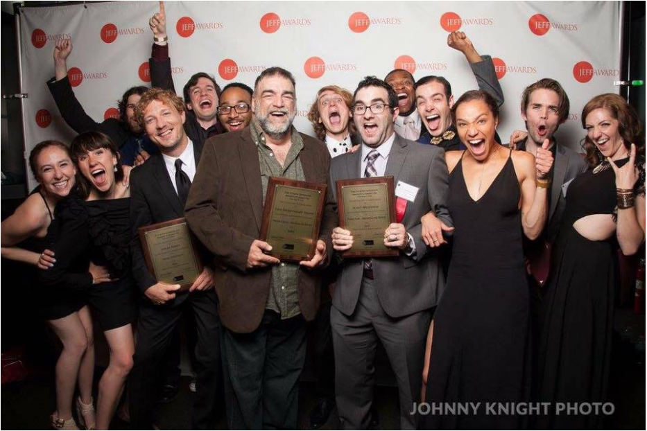
The incredible richness of Chicago Theater is reflected in the numbers. For the year ending June 30, 2022, 49 producing organizations invited the Jeffs to judge opening nights. Although the Non-Equity year still runs to December 31, 2022, so far 51 Non-Equity organizations invited the Jeffs to opening nights. 94 Equity individual play or musical openings were judged; of these 76 were recommended. So far, 99 Non-Equity openings have taken place; 51 have been recommended. Covid has obviously taken a toll. Equity productions judged 2018-19 totaled 133 shows. Many theater companies have returned slowly to a full season of shows.
The complete list of Equity nominations includes separate categories for large and mediumsized theaters, musicals, and short-run productions with the opportunity to vote for the many elements unique to a production.
What does a Jeff Award do for an actor, a theater, a designer, or other artists? Chris Jones notes that Chicago theater is known well beyond our borders. “New York does respect Chicago theater, uniquely the only city outside of New York [so respected]. [The award] helps individuals. Bios in New York programs mention their Jeff Awards.” And Chicago productions like Steppenwolf’s Grapes of Wrath do go successfully to Broadway.
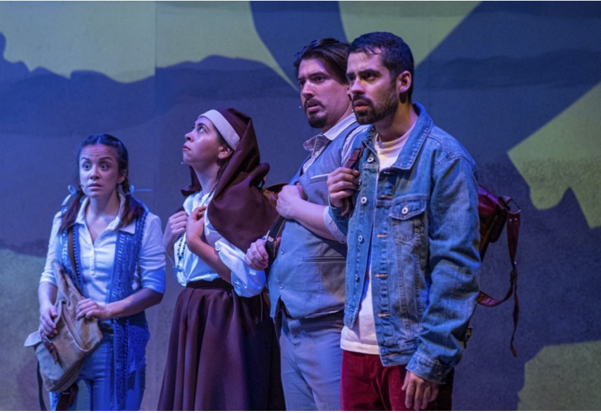
Everyone acknowledges that it’s hard work making a living in the theater. “I really think that Chicago theater can be a grind…you are not going to make a fortune… [with the Jeffs} it’s nice to have some glamour, to be able to get up and thank your friends and parents,” observes Jones. John Knight feels that as a Jeff volunteer he also benefits. “I am proud to be part of an organization that tries to honor those who can’t quite make a full time living in the arts but deserve more kudos and attention for their efforts. If The Jeffs can help give artists some career validation and a tiny boost to help them move the next level in the careers, I am happy to be a part of that community.”
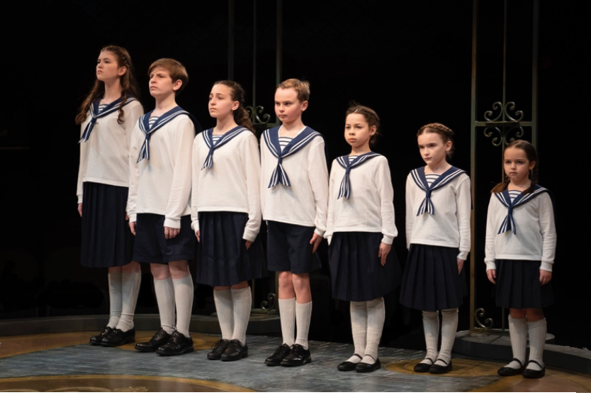
All Jeff Committee members are volunteers, whose enthusiasm for theater requires taking on significant responsibilities. “I am currently mentoring a new member, I am also on the opening night tally team as well as the opening night assignments team,” said Knight. These are just the beginning of the detailed attendance and voting statistics that must be maintained for all 55 members.
I was honored to be invited to join the Jeff Committee just as Covid was winding down, and theaters were beginning to produce again. The best advice I’ve gotten from fellow committee members is that “you don’t need to search for excellence. Excellence will find you.”
The Jeff Committee welcomes new members and encourages those interested to look at the website for membership requirements. Diversity is key; the Jeffs welcome all interested and qualified candidates, regardless of sex, age, ethnicity, disability, race, color, national origin, sexual orientation or gender identity, or any other basis prohibited by law.
If you read this on Sunday, Oct. 16, you may still be able to buy tickets for the show at the Drury Lane Theatre in Oak Brook on the 17th at www.jeffawards.org where you will also find the complete list of nominees and soon the list of this year’s winners! Whatever you do, as a Steppenwolf Theatre T-shirt says, ”Go See a Play!”